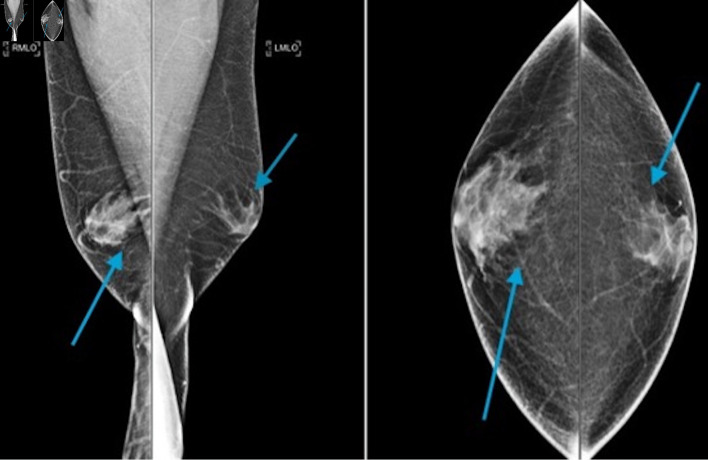
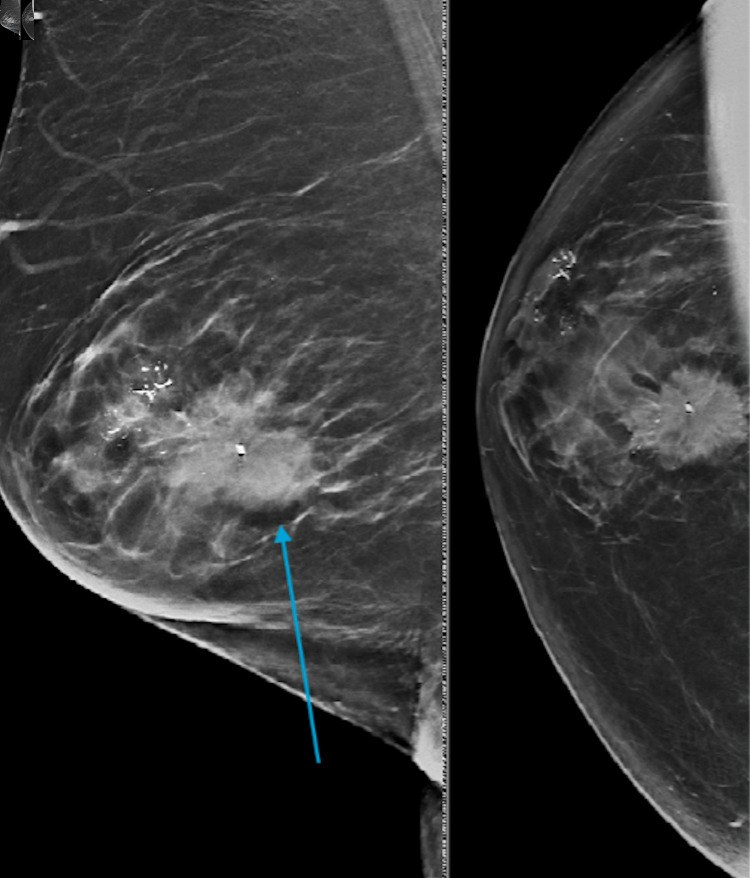
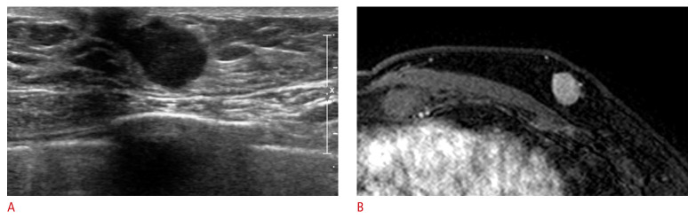

596 — Ung thư vú ở nam giới & người chuyển giới: protocol hình ảnh, tầm soát theo nguy cơ & theo dõi / Male and transgender breast cancer
Tags: pattern:khoi-duoi-quang-vu pattern:day-tuyen-khong-doi-xung vung:vu protocol:DBT protocol:MRI-vu score:BI-RADS anatomy:tuyen-vu-nam protocol:tam-soat-nguy-co
Mức chắc chắn (certainty): tổng hợp y văn (literature synthesis) — nhóm tự biên từ 5 bài mở toàn văn (J Clin Med Res 2024, PMC11161189; Ultrasonography 2025, PMC11717687; Ann Surg Open 2026, PMC13596940; Ann Surg Open 2026, PMC13016194; Ann Surg Oncol 2025, PMC12689806) + 1 review tổng hợp guideline (Pak J Med Sci 2024, PMC11395358). Số liệu giữ nguyên theo từng cohort, không gộp thành "chuẩn chung".
1. Tổng quan — vì sao vú nam khác vú nữ, và vì sao "mổ" ở người chuyển giới không phải cắt toàn bộ tuyến
- Dịch tễ (ngưỡng định lượng): ung thư vú nam chiếm < 1% toàn bộ ung thư vú; Mỹ ước tính 2.800 ca xâm lấn mới/năm 2023; tuổi trung vị 67 so với 61 ở nữ (SEER) → nam mắc muộn hơn ~6 năm và thường được phát hiện ở giai đoạn muộn hơn vì không có chương trình tầm soát và chỉ số nghi ngờ thấp.
- TẠI SAO vú nam chỉ có bệnh ống tuyến (ductal): vú nam trưởng thành gồm da, mỡ dưới da, ống tuyến teo nhỏ và mô đệm; tiểu thùy (lobule) chỉ phát triển khi có estrogen + progesterone đủ → các bệnh lý cần tiểu thùy (ung thư tiểu thùy ILC, LCIS, fibroadenoma, u lá phyllodes) rất hiếm ở nam. Ngược lại, bệnh lý tăng sinh ống tuyến — gynecomastia, IDC, DCIS — là nhóm gặp ở nam.
- Hệ quả đọc phim: không được dùng "không có tiểu thùy nên không cần nghĩ ung thư vú"; thể mô học hay gặp là IDC 85–90%, DCIS ~5% (DCIS nam thường dạng solid hoặc cribriform, ít khi đứng riêng không kèm IDC).
- Sinh học khác nữ: ER/PR dương tính cao hơn, HER2 thấp hơn → ảnh hưởng điều trị, không ảnh hưởng cách đọc hình ảnh.
- TẠI SAO hình ảnh nam khó hơn nữ (vật lý chụp): vú nam nhỏ, ít mỡ, mô tuyến tập trung sát quầng vú. Máy nhũ ảnh nén không đủ mô để dàn mỏng → tổn thương chồng lấp với quầng vú/núm và dễ bị gynecomastia che khuất. Đây là lý do siêu âm (US) là bạn đồng hành bắt buộc, không phải xét nghiệm thay thế.
- Gynecomastia — nền tảng giải phẫu của mọi ca vú nam: gặp ở 40–65% nam giới; trên nhũ ảnh là dạng "ngọn lửa" (flame-shaped) từ quầng vú lan ra mỡ xung quanh, không có vi vôi hóa, bờ hòa dần vào mỡ (không có bờ rõ như khối). Phân bố có thể không đối xứng, và gynecomastia một bên vẫn có thể lành tính.
- Cạm bẫy cổ điển: khối ung thư nằm sau/trong vùng gynecomastia có thể bị che mất — trong loạt 97 ca của Appelbaum, 1 ca ung thư vú nam không thấy được vì bị gynecomastia che khuất (nguồn PMC11161189).
- Ngưỡng hiệu năng chẩn đoán (để chọn phương thức):
- Nhũ ảnh: độ nhạy 92–95%, độ đặc hiệu 90–95%; trong loạt 628 bệnh nhân (Munoz Carrasco) nhũ ảnh nhạy nhất 94,7% nhưng US đặc hiệu nhất 95,3%.
- Siêu âm: độ nhạy 88–100%, độ đặc hiệu 95–97%; nhạy hơn nhũ ảnh trong phát hiện hạch nách.
- MRI: độ nhạy cao nhất nhưng không dùng thường quy; chỉ định giới hạn ở 5 tình huống (mục 4).
- Người chuyển giới — điểm mấu chốt về GIẢI PHẪU CÒN LẠI: "gender-affirming mastectomy" là tên gọi sai về mặt phẫu thuật: đa số là cắt tuyến bán phần (subtotal glandular reduction) để giữ đường nét ngực, cố ý để lại mô tuyến. Mô tuyến còn lại (retained fibroglandular tissue — RFGT) được ghi nhận ở 50% ca nipple-sparing và 13% ca skin-sparing (dẫn trong PMC13596940). Vì vậy nguy cơ ung thư không về 0, và ghi "đã cắt toàn bộ tuyến" trong hồ sơ là lỗi có hại (dẫn tới ngừng tầm soát, mất bảo hiểm).
- Bằng chứng mô bệnh từ chính mảnh mổ: scoping review 13 nghiên cứu, trong đó 9 nghiên cứu soát 3.869 mảnh mổ GAM phát hiện 42 ca atypia, 5 DCIS, 1 Paget, 3 IDC; toàn bộ 13 nghiên cứu có 42 atypia, 6 DCIS, 1 Paget, 10 IDC, trong đó 7 ung thư xâm lấn + 1 DCIS được phát hiện TRƯỚC mổ (PMC12689806).
- Nguy cơ nền không hề nhỏ: trong một nghiên cứu 2024 (Ann Surg Oncol, dẫn trong PMC13016194), > 50% người tìm mổ GACMS có điểm Tyrer–Cuzick ≥ 17% (ngưỡng "nguy cơ cao" thường dùng) — tức đánh giá nguy cơ phải làm TRƯỚC mổ, không phải sau.
- Người chuyển giới nữ (transfeminine, nam→nữ): dùng estrogen + kháng androgen ≥ 5 năm làm tăng nguy cơ so với nam cis; cohort Hà Lan báo tỷ lệ mắc cao gấp 46 lần nam cis (vẫn thấp hơn nữ cis) (PMC11395358). < 5 năm hormone thì nguy cơ tương đương nam cis → không tầm soát bằng hình ảnh.
- Phản biện (fidelity + critique): (a) các số về GACMS đến từ mảnh mổ hồi cứu, không phải theo dõi dọc → không biết nguy cơ tích lũy thật; (b) "46 lần" là so với nam cis, không phải so với nữ cis — đừng trích như "nguy cơ gần bằng nữ"; (c) guideline hiện mâu thuẫn nhau (mục 4) nên mọi khuyến cáo dưới đây phải đọc kèm quyết định chia sẻ với người bệnh.
2. Mẫu hình (pattern) + chẩn đoán phân biệt theo vị trí & bối cảnh (Gamut)
- Khuôn 1 — Đám mờ hình ngọn lửa, đối xứng/không đối xứng, NGAY SAU quầng vú, không vôi hóa. Gamut: gynecomastia sinh lý/thuốc (spironolactone, cimetidine, digoxin, cannabinoid, rượu, xơ gan, suy thận, cường giáp, u tế bào mầm) vs pseudo-gynecomastia (mỡ) vs ung thư sớm. Chốt: không có bờ, hòa vào mỡ, không vôi hóa, đối xứng tương đối → lành; bờ rõ/lệch tâm/có vôi hóa → phải US.
- Khuôn 2 — Khối dưới quầng vú LỆCH TÂM so với núm, một bên, không đau. Gamut: ung thư vú nam (IDC) vs gynecomastia không đối xứng vs áp-xe/viêm quanh quầng vs nang biểu bì. Chốt: lệch tâm + bờ spiculated/không rõ + có vôi hóa → nghi ác (đây là thể hiện điển hình); đau, đỏ, sốt → viêm.
- Khuôn 3 — Khối + vôi hóa. Gamut: DCIS/IDC vs vôi hóa lành tính vs vôi hóa da. Chốt: ở nam, vôi hóa "trông lành" vẫn phải coi là nghi ngờ — vôi hóa trong ung thư vú nam chỉ gặp 9–31%, ít hơn, thô hơn, ít dạng ống (rod-like) so với nữ, nên tiêu chuẩn "vôi hóa lành" của nữ không chuyển nguyên sang nam được.
- Khuôn 4 — Núm tụt, da dày, hạch nách, không sờ thấy khối. Gamut: ung thư vú nam xâm lấn vs viêm da/tổn thương lành tính vs di căn vú. Chốt: di căn tới vú thường từ ung thư tuyến tiền liệt hoặc SCC đầu–cổ — bệnh sử là chốt, không phải hình ảnh.
- Khuôn 5 — Hạch nách di căn, vú bình thường trên nhũ ảnh + US. Gamut: ung thư vú nam thể ẩn (occult) vs lymphoma vs di căn khác. Chốt: MRI vú là chỉ định chính thức trong tình huống này (mục 4).
- Khuôn 6 — Sau mổ GACMS: khối/đau thành ngực. Gamut: mô tuyến còn lại (RFGT) vs sẹo xơ vs tái phát/ung thư mới vs nang/biến chứng mổ. Chốt: vị trí đúng đường mổ + không tăng theo thời gian → sẹo; khối mới, tăng dần, có vôi hóa → phải chụp + sinh thiết; không được mặc định "đã mổ nên không thể ung thư".
- Khuôn 7 — Ngực to lan tỏa ở người dùng hormone nữ hóa ≥ 5 năm. Gamut: mô tuyến do hormone vs ung thư vs bệnh lý mô mềm. Chốt: đối xứng, không khối, không hạch → theo dõi; một bên, có khối → DBT + US theo protocol nữ.
- Gợi nhớ "M-A-L-E": Mass eccentric to nipple (khối lệch tâm) — Asymmetry mới (bất đối xứng mới) — Lesion with calcification (tổn thương có vôi hóa) — Extent beyond gynecomastia (vượt ra ngoài vùng gynecomastia).
3. Bảng so sánh phân biệt (ma trận đối chiếu)
| Thực thể (entity) | Hình ảnh điển hình | Chốt vào (rule-in) | Chốt loại (rule-out) | Gợi ý xác nhận |
|---|---|---|---|---|
| Gynecomastia | Đám mờ hình ngọn lửa sau quầng vú, lan ra mỡ, không vôi hóa, có thể hai bên/không đối xứng | Không bờ + hòa vào mỡ + không vôi hóa + đối xứng tương đối | Bờ rõ, lệch tâm, có vôi hóa, có hạch → không phải gynecomastia đơn thuần | Nhũ ảnh + US; hỏi thuốc/rượu/xơ gan/suy thận |
| Ung thư vú nam (IDC) | Khối lệch tâm so với núm, bờ spiculated/không rõ, có thể kèm vôi hóa, núm tụt, da dày | Lệch tâm + bờ spiculated + vôi hóa + hạch nách | Hình ngọn lửa không bờ, không vôi hóa → gynecomastia | Core biopsy dưới US; không FNA nếu cần ER/HER2 |
| DCIS nam | Vôi hóa thô, ít, thành đám; có thể khối; 10% dạng khối, 7–13% biến dạng cấu trúc | Vôi hóa thành đám/thô + không có khối rõ | Vôi hóa da, vôi hóa mạch máu (hình ống, chạy theo mạch) | Nhũ ảnh phóng đại + sinh thiết có định vị |
| Di căn tới vú | Khối tròn, bờ rõ, thường không vôi hóa, có thể nhiều ổ | Tiền sử ung thư tiền liệt tuyến/SCC đầu–cổ/melanoma | Bệnh sử không có ung thư ngoài vú + hình ảnh điển hình ung thư nguyên phát | Sinh thiết + hóa mô miễn dịch (GATA-3, TTF-1, PSA) |
| Sẹo/mô tuyến còn lại sau GACMS | Đám mờ/tổ chức xơ đúng đường mổ, bờ không đều, không vôi hóa, ổn định | Đúng vị trí mổ + ổn định qua các lần chụp | Khối mới, tăng kích thước, vôi hóa mới → tái phát/u mới | So phim cũ; US; sinh thiết nếu thay đổi |
| Viêm/áp-xe quanh quầng | Da dày, phù, có thể ổ dịch, đau, đỏ | Đau + đỏ + sốt + ổ dịch trên US | Khối cứng, không đau, không sốt → nghi u | US + kháng sinh; dẫn lưu nếu có ổ |
| Tăng sinh tuyến do hormone (transfeminine) | Tuyến đối xứng hai bên, không khối, không hạch | Đang hormone ≥ 5 năm + đối xứng + không khối | Một bên, có khối, hạch → chụp theo protocol nữ | DBT + US; MRI nếu nguy cơ cao |

Nhũ ảnh MLO hai bên: đám mờ dạng ngọn lửa tỏa từ quầng vú ra mỡ, không có vôi hóa — mẫu hình lành tính điển hình của gynecomastia. Nguồn: J Clin Med Res 2024 (PMC11161189), CC BY-NC 4.0 — giữ nguyên bản.
*Nhũ ảnh chẩn đoán: khối bờ không rõ + vôi hóa đa dạng (pleomorphic); sinh thiết cho DCIS ở một vị trí và IDC ở vị trí khác. Nguồn: J Clin Med Res 2024 (PMC11161189), CC BY-NC 4.0 — giữ nguyên bản.*Tiểu mục dấu hiệu — đọc đúng 3 dấu hiệu hay bị bỏ
- "Flame shape" của gynecomastia: không có bờ — đây là điểm phân biệt với khối u (khối u có bờ, dù bờ có thể rõ hay không rõ). Nếu bạn mô tả được "bờ", hãy nghĩ lại: rất có thể đó không phải gynecomastia đơn thuần.
- Vị trí lệch tâm (eccentric): ung thư vú nam điển hình dưới quầng vú nhưng lệch tâm so với núm; gynecomastia lấy núm làm tâm. Trên MLO, vẽ đường từ núm ra sau — khối lệch khỏi trục này là dấu hiệu đáng ngờ.
- Vôi hóa: ung thư vú nam có vôi hóa ít hơn (9–31%), thô hơn, ít dạng ống so với nữ. Vì vậy một cụm vôi hóa nhỏ, thô ở nam vẫn có thể là DCIS — không được áp tiêu chuẩn "vôi hóa lành tính" của nữ.
4. Protocol chụp, tầm soát theo nguy cơ & theo dõi
4.1. Nam giới có triệu chứng (chẩn đoán, KHÔNG phải tầm soát)
- > 25 tuổi: nhũ ảnh chẩn đoán trước, sau đó US nếu nhũ ảnh bất thường/không kết luận.
- < 25 tuổi: US trước, nhũ ảnh sau (ngực ít mỡ, tổn thương lành tính nhiều).
- Luôn chụp HAI BÊN (không chụp một bên): để so đối xứng và phát hiện bệnh lý bên đối diện — đây là khác biệt thực hành so với nữ có triệu chứng.
- Kỹ thuật: DBT/ nhũ ảnh số + nén vừa phải (vú nhỏ); US tuyến vú + hố nách cùng buổi; đo khối theo 3 chiều, ghi vị trí theo mặt đồng hồ + khoảng cách từ núm (cm).
4.2. Chỉ định MRI vú ở nam (đúng 5 nhóm — không mở rộng)
- Hình ảnh không kết luận (nhũ ảnh + US mâu thuẫn).
- Đánh giá mức lan ra sau, xâm lấn da/thành ngực.
- Hạch nách di căn + nhũ ảnh/US âm tính (tìm u nguyên phát ẩn).
- Nghi ung thư vú thể viêm hoặc cần đánh giá xâm lấn da khi lâm sàng nghi.
- Bệnh tồn dư sau mổ — phải chụp ngay sau mổ, trước khi mô hạt (granulation tissue) hình thành, vì mô hạt sẽ làm sai lệch tín hiệu.

*Bên trái (A): US — khối dạng bầu dục, bờ không rõ (non-circumscribed), dưới quầng vú. Bên phải (B): MRI trừ sau tiêm — khối ngấm thuốc bờ rõ hơn so với trên US, giúp đánh giá mức lan. Nguồn: Ultrasonography 2025 (PMC11717687), CC BY-NC — giữ nguyên bản.*4.3. Tầm soát — ai được chụp, ai KHÔNG (bảng ngưỡng)
| Nhóm | Khuyến cáo | Ngưỡng/độ tuổi |
|---|---|---|
| Nam BRCA1/2 | Không tầm soát bằng nhũ ảnh/MRI; tự khám + khám lâm sàng hằng năm | Bắt đầu 35 tuổi (NCCN) |
| Nam đã mổ bảo tồn (lumpectomy) vì ung thư vú | Nhũ ảnh cùng bên hằng năm | Sau mổ, bất kể di truyền (ASCO 2020) |
| Nam đã mắc + có đột biến di truyền | Có thể chụp nhũ ảnh bên đối diện hằng năm | Sau mổ (ASCO 2020) |
| Nam nguy cơ cao khác (tiền sử gia đình, gynecomastia, đột biến) | Có thể cân nhắc tầm soát | Nghiên cứu Marino: 163 nam/806 phim, phát hiện 4,9/1.000 — tương đương nữ (5,4/1.000) |
| Nam sống sót sau ung thư vú giai đoạn sớm | Không chụp theo dõi thường quy | Nguy cơ ung thư vú thứ hai < 2% |
4.4. Người chuyển giới — tầm soát theo mô tuyến CÒN LẠI, không theo nhãn "đã mổ"
| Nhóm | Khuyến cáo | Ngưỡng |
|---|---|---|
| Transfeminine, trung bình, hormone ≥ 5 năm | DBT/nhũ ảnh hằng năm (ACR) | ≥ 40 tuổi; WPATH: theo nữ cùng tuổi; UCSF: 2 năm/lần từ 50; Canada: 50–69, 2 năm/lần |
| Transfeminine, hormone < 5 năm hoặc không dùng | Không tầm soát bằng hình ảnh | Mọi tuổi (nguy cơ ≈ nam cis) |
| Transfeminine nguy cơ cao (nguy cơ sống > 20%) | DBT/nhũ ảnh hằng năm | 25–30 tuổi (ACR) |
| Transmasculine sau GACMS, không còn mô tuyến đáng kể | Không tầm soát thường quy; chụp khi có triệu chứng | ACR: không có xét nghiệm hình ảnh phù hợp ở mọi tuổi/mức nguy cơ |
| Transmasculine sau GACMS, CÓ RFGT được ghi nhận | Nhũ ảnh hằng năm (ý kiến chuyên gia, PMC13596940) | Trung bình: hằng năm; nguy cơ cao: nhũ ảnh + MRI hằng năm |
| Transmasculine sau reduction mammoplasty hoặc chưa mổ | Theo guideline nữ cùng tuổi | Trung bình ≥ 40; trung gian ≥ 30; cao 25–30 + MRI bổ trợ |
- Vì sao nhũ ảnh vẫn có chỗ sau GACMS: nhũ ảnh nhạy 87–95% với DCIS (đặc biệt DCIS dạng vi vôi hóa), trong khi US chỉ 47–71%; US chưa được kiểm chứng làm phương thức tầm soát đơn độc. Vì vậy không thay nhũ ảnh bằng US chỉ vì "ngực nhỏ".
- Điều bắt buộc trong hồ sơ mổ: ghi rõ ý định phẫu thuật (reduction vs mastectomy), thể tích/khối lượng tuyến đã cắt, và đánh giá RFGT — đây là yếu tố quyết định có tầm soát tiếp hay không.
flowchart TD
A["Người bệnh có vú / mô tuyến vú"] --> B{"Nam cis hay người chuyển giới?"}
B -->|"Nam cis"| C{"Có triệu chứng?"}
C -->|"Có"| D{"> 25 tuổi?"}
D -->|"Có"| E["Nhũ ảnh/DBT HAI BÊN + US cùng buổi"]
D -->|"Không"| F["US trước, nhũ ảnh sau nếu cần"]
C -->|"Không"| G{"Đột biến BRCA1/2?"}
G -->|"Có"| H["Tự khám + khám lâm sàng hằng năm từ 35 tuổi; KHÔNG chụp tầm soát"]
G -->|"Không"| I["Không tầm soát thường quy"]
B -->|"Transfeminine"| J{"Hormone ≥ 5 năm?"}
J -->|"Không"| K["Không tầm soát bằng hình ảnh"]
J -->|"Có"| L{"Nguy cơ sống > 20%?"}
L -->|"Có"| M["DBT/nhũ ảnh hằng năm từ 25–30 tuổi"]
L -->|"Không"| N["DBT/nhũ ảnh hằng năm từ 40 tuổi"]
B -->|"Transmasculine"| O{"Còn mô tuyến / có RFGT?"}
O -->|"Không"| P["Không tầm soát; chụp khi có triệu chứng"]
O -->|"Có"| Q["Nhũ ảnh hằng năm; nguy cơ cao thêm MRI"]
5. Biến thể bình thường & cạm bẫy
- Gynecomastia không đối xứng là BÌNH THƯỜNG. Đừng sinh thiết chỉ vì hai bên khác nhau; hãy tìm bờ, vôi hóa, lệch tâm.
- Gynecomastia che khối ung thư: ca đã ghi nhận ung thư không thấy được trên nhũ ảnh vì bị gynecomastia che → nếu lâm sàng cứng, US bắt buộc, và MRI nếu vẫn không kết luận.
- Vôi hóa "lành tính" ở nam không lành tính chắc chắn: ung thư vú nam có ít vôi hóa hơn, thô hơn; áp tiêu chuẩn nữ sẽ bỏ sót DCIS.
- Ngực nhỏ ≠ không chụp được: trong tầm soát nữ, kích thước ngực không phải tiêu chí loại trừ; ngực nhỏ vẫn chụp được. Đừng dùng "ngực nhỏ" để bỏ nhũ ảnh.
- Sai nhãn "mastectomy" sau GACMS: dẫn tới ngừng tầm soát oan và mất quyền lợi bảo hiểm. Phải ghi GACMS/reduction + RFGT.
- Sẹo sau mổ vs tái phát: sẹo ổn định, đúng đường mổ, không vôi hóa; tái phát mới, tăng dần, có vôi hóa. Luôn so phim cũ trước khi kết luận.
- Siêu âm đơn độc bỏ sót DCIS: US nhạy 47–71% với DCIS so với 87–95% của nhũ ảnh → không dùng US thay nhũ ảnh ở người còn mô tuyến.
- Đừng quên di căn tới vú: khối vú ở nam có tiền sử ung thư tiền liệt tuyến/SCC đầu–cổ phải nghĩ di căn; hóa mô miễn dịch (GATA-3 âm, PSA/TTF-1 dương) là chốt.
6. Tự lượng giá — Blind Quiz
Ca 1 — Nam 58 tuổi, ngực to hai bên 6 tháng, không đau, không sờ thấy khối cứng. Nhìn phim trước, mô tả.
- Hỏi: mô tả hình dạng đám mờ? Có vôi hóa không? Có bờ không? Chẩn đoán và bước tiếp theo?
Bấm để hiện đáp án
- Gynecomastia hai bên: đám mờ hình ngọn lửa tỏa từ quầng vú ra mỡ, không vôi hóa, không có bờ rõ (hòa dần vào mỡ). Có thể không đối xứng hoàn toàn — vẫn lành tính.
- Bước tiếp: không sinh thiết; hỏi thuốc/rượu/xơ gan/suy thận/cường giáp/u tế bào mầm; US nếu lâm sàng không yên tâm hoặc có vùng cứng khu trú.
- Phản biện: nếu đám mờ lệch tâm, có bờ, hoặc có vôi hóa → không được gọi là gynecomastia; phải US + sinh thiết.
- Nguồn: J Clin Med Res 2024 (PMC11161189), CC BY-NC 4.0.
Ca 2 — Nam 66 tuổi, sờ thấy khối cứng dưới quầng vú trái, không đau, núm hơi tụt. Nhũ ảnh dưới đây — có gì và làm gì?
Bấm để hiện đáp án
- Khối bờ không rõ + cụm vôi hóa đa dạng (pleomorphic); kèm núm tụt → nghi ung thư vú nam (DCIS ± IDC).
- Bước tiếp: US cùng buổi + core biopsy dưới US (không FNA — cần ER/PR/HER2); chụp hạch nách; MRI nếu cần đánh giá lan ra sau/xâm lấn da-thành ngực.
- Kết quả mô bệnh của ca nguồn: DCIS ở một vị trí, IDC ở vị trí khác → nhắc rằng nhiều ổ có thể cùng tồn tại.
- Nguồn: J Clin Med Res 2024 (PMC11161189), CC BY-NC 4.0.
Ca 3 — Nam 59 tuổi, khối vú trái. US và MRI dưới đây: chẩn đoán, và MRI có vai trò gì?
Bấm để hiện đáp án
- IDC vú nam: US — khối bầu dục bờ không rõ, dưới quầng vú; MRI trừ — khối ngấm thuốc tương ứng, bờ rõ hơn, đánh giá tốt mức lan ra sau và xâm lấn da/thành ngực.
- Vai trò MRI: không thường quy; ở ca này thuộc chỉ định đánh giá mức lan. Nghiên cứu ghép cặp 61 nam/267 nữ cho thấy thêm MRI trước mổ không cải thiện DFS/OS → không dùng MRI như "chụp cho chắc".
- Tiên lượng cần nhớ: nam có DFS 10 năm 70,6% vs 89,2% và OS 10 năm 64,4% vs 96,3% so với nữ ghép cặp — phần lớn do phát hiện muộn, không phải do sinh học xấu hơn.
- Nguồn: Ultrasonography 2025 (PMC11717687), CC BY-NC.
Bài liên quan chéo
- 500 – Tổng quan Vú & Sản Phụ khoa
- 510 – BI-RADS nhũ ảnh, siêu âm, MRI (từ vựng BI-RADS dùng lại cho nam/người chuyển giới)
- 512 – Vi vôi hóa & túi ngực biến dạng (vôi hóa — đọc khác ở nam)
- 514 – Ung thư vú: TNM, MRI, lan rộng
- 517 – Sinh thiết định vị vú & quản lý clip
- 594 – Hóa dự phòng ung thư vú (nguy cơ cao, BRCA — cùng nhóm người bệnh)
Không dùng để chẩn đoán độc lập khi chưa có người hướng dẫn.